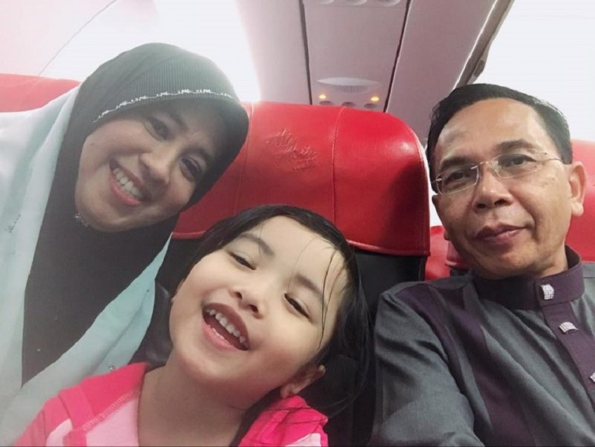

Runsing Bila Anak Tak Mahu Dengar Kata, Ini Pesanan Ustazah Siti Nor Bahyah
Buntu memikirkan bila anak-anak yang semakin membesar tidak mahu mendengar kata. Pelbagai amalan yang dilakukan sejak kecil namun anak masih lagi menunjukkan sikap yang sama.
Sebagai ibu dan ayah, nilai diri kita sendiri. Mungkin kita tersalah mendidik atau tersalah langkah dalam berkongsi ilmu dengan anak-anak. Jangan buntu dan terus menyalahkan diri kerana masih ada ruang untuk anak kecil kita berubah.
Empat pesanan yang dikongsikan oleh Ustazah Siti Nor Bahyah Mahamood dalam mendidik anak-anak di zaman ini kita kena ikuti. Memulakan dengan kata-kata yang baik adalah kunci kepada segala kebaikan. Ikuti segala perkongsian olehnya.
Anak-anak yang mendengar kata ibu dan ayah pastinya menjadi satu kebanggaan. Tiada yang lebih membahagiakan buat hati ayah dan ibu melainkan memperoleh anak yang mendengar kata, rajin tolong ayah ibu, rajin pergi sekalah, tak tinggal solat dan sebagainya.
Semua ini antara ciri-ciri anak yang sentiasa menjadi kebanggaan. Namun tidak semua anak membesar dengan baik dan menuruti segala kata-kata ibu ayah. Ini yang boleh diamalkan dalam kehidupan harian. Ingatlah bahawa setiap kata-kata kita adalah satu doa!

Keluarkan Kata-Kata Baik
Sentiasa mengeluarkan perkataan yang positif buat anak-anak kita seperti anak bertuah, anak bijak, anak mama sayang, anak ayah sayang dan sebagainya. Elakkan sama sekali perkataan negatif buat anak kita ketika kita sedang marah. Takut dan dibimbangi kata-kata yang kita gunakan ini mustajab kerana ianya satu doa!
Tegur Dengan Baik
Tegurlah anak dengan penuh berhemah dan kasih sayang. Anak-anak adalah ujian dari Allah, buat ibu dan ayah bagi menilai kesabaran mereka dalam mendidik anak-anak. Jadi tegurlah mereka dengan baik, penuh berhemah dan kasih sayang. Gunakan perkataan yang paling baik dan nada lembut dalam menegur mereka.
Sentiasa Gunakan Nama Allah
Sentiasalah gunakan nama Allah dan Rasulullah. Sebagai contoh, “Anak ibu sayang Allah dan Nabi tak?” Kalau sayang Allah jangan tinggalkan solat dan jangan lawan cakap mak ayah sebab kita semua nak masuk syurga dan dapat syafaat daripada Allah SWT. Sentiasalah gunakan nama Allah dalam seharian bagi mendidik sifat mulia anak.
Banyakkan Berdoa
Kunci kepada segala kebaikan adalah berdoa kepada Allah SWT. Ibu dan ayah janganlah putus doa pada anak. Sentiasalah berdoa kepada mereka untuk terus menjadi anak yang baik, patuh pada ibu ayah dan menjadi anak yang terpuji.
Apa pandangan anda dengan artikel ini? Komen di bawah:
{kind=link}